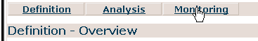

Figure:
Figure: Activity Instances completed in Department USA
In this chapter we will demonstrate how the security restriction set in the activity Activity by Scoped NationalDirector for reading activity instance data is reflected when monitoring the activity instances.
To view activity instance data in the Monitoring part of the Predefined Report Templates:

To see the difference of the displayed activities depending on the authorization set for the logged-in user, you have to login with the two users and with the administrator role (motu/motu). You should see the following results:
Figure:
Figure: Activity Instances completed in Department USA